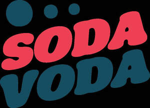

Trade Mark Journal No.2025/028 11 July 2025
UK00004217691 11 June 2025 (30,32)

- Class 30
- Chocolate; Chocolate confectionary; Chocolate confectionery; Chocolate confectionery products; Confectionery chocolate products; Chocolate confections; Chocolate caramel wafers; Chocolate fudge; Chocolate coating; Chocolate for confectionery and bread; Chocolate wafers; Chocolate flavoured confectionery; Dairy chocolate; Chocolate candies; Chocolate coffee; Shortbread with a chocolate coating; Chocolate confectionery containing pralines; Chocolate sweets; Milk chocolate; Chocolate truffles; Chocolate biscuits; Chocolate marzipan; Confectionery items coated with chocolate; Chocolate chips; Chocolate flavourings; Chocolate flavoured coatings; Chocolate syrups; Chocolate brownies; Chocolate syrup; Chocolate coated biscuits; Chocolate sauces; Shortbread with a chocolate flavoured coating; Chocolate fondue; Chocolate powder; Chocolate confectionery having a praline flavour; Chocolate cake; Milk chocolate teacakes; Non-medicated chocolate confectionery; Chocolate cakes; Dairy-free chocolate; Chocolate sauce; Chocolate candy with fillings; Chocolate desserts; Chocolate beverages; Waffles with a chocolate coating; Chocolate vermicelli; Chocolate creams; Chocolate syrups for the preparation of chocolate based beverages; Non-medicated flour confectionery coated with chocolate; Chocolate covered wafer biscuits; Chocolate coated nougat bars; Milk chocolate bars; Chocolate pastries; Chocolate waffles; Chocolate coated marshmallow biscuits containing toffee; Substitutes (Chocolate -); Chocolate fillings for bakery products; Chocolate beverages with milk; Non-medicated flour confectionery coated with imitation chocolate; Chocolate covered biscuits; Chocolate eggs; Shortbread part coated with chocolate; Chocolate bars; Candy with cocoa; Biscuits having a chocolate flavoured coating; Biscuits having a chocolate coating; Chocolate flavoured beverages; Imitation chocolate; Aerated beverages [with coffee, cocoa or chocolate base]; Pralines made of chocolate; Chocolate for toppings; Chocolate coated fruits; Mousses (Chocolate -); Chocolate mousses; Chocolate coated nuts; Hot chocolate; Chocolate bunnies; Confectionery items formed from chocolate; Chocolate pastes; Aerated drinks [with coffee, cocoa or chocolate base]; Chocolate with alcohol; Non-medicated flour confectionery containing chocolate; Chocolate shells; Truffles (rum -) [confectionery]; Chocolate-coated sugar confectionery; Shortbread part coated with a chocolate flavoured coating; Aerated chocolate; Chocolate drink preparations flavoured with toffee; Chocolate extracts; Vegan hot chocolate; Chocolate coated macadamia nuts; Drinks flavoured with chocolate; Almond confectionery; Deep chocolate cake made with chocolate sponge; Chocolate topping; Chocolate covered cakes; Beverages with a chocolate base; Chocolate decorations for confectionery items; Ice creams flavoured with chocolate; Turkish delight coated in chocolate; Chocolate based products; Non-medicated confectionery containing chocolate; Non-medicated flour confectionery containing imitation chocolate; Chocolate drink preparations flavoured with mocha; Almonds covered in chocolate; Chocolate covered pretzels; Peanut butter confectionery chips; Sweets (Non-medicated -) in the nature of chocolate eclairs; Chocolate beverages containing milk; Non-medicated chocolate; Milk chocolates; Truffles [confectionery]; Ice beverages with a chocolate base; Drinking chocolate; Fondants [confectionery]; Biscuits containing chocolate flavoured ingredients; Cocoa products; Chocolate drink preparations flavoured with banana; Half covered chocolate biscuits; Confectionery chips for baking; Candy with caramel; Nut confectionery; Liqueur chocolates; Chocolates; Beverages containing chocolate; Chocolate topped pretzels; Chocolate drink preparations flavoured with nuts; Ice creams containing chocolate; Mixtures of malt coffee with cocoa; Beverages made with chocolate; Beverages made from chocolate; Cocoa; Chocolate decorations for cakes; Chocolate based drinks; Chocolate drink preparations flavoured with mint; Chocolate flavoured beverage making preparations; Flavoured sugar confectionery.
- Class 32
- Soft drinks; Carbonated soft drinks; Non-carbonated soft drinks; Fruit-flavored soft drinks; Low-calorie soft drinks; Coffee-flavored soft drinks; Colas [soft drinks]; Soft drinks flavored with tea; Fruit flavored soft drinks; Syrups for making soft drinks; Powders for making soft drinks; Syrups used in the preparation of soft drinks; Fruit-based soft drinks flavored with tea; Low calorie soft drinks; Powders used in the preparation of soft drinks; Soft drinks for energy supply; Concentrates for use in the preparation of soft drinks; Concentrates used in the preparation of soft drinks; Carbonated non-alcoholic drinks; Non-alcoholic drinks; Cola drinks; Isotonic non-alcoholic drinks; Non-alcoholic fruit drinks; Juice drinks; Fruit flavoured carbonated drinks; Isotonic drinks; Non-alcoholic malt drinks; Slush drinks; Non-alcoholic sparkling fruit juice drinks; Fruit drinks; Non-alcoholic carbonated beverages; Frozen fruit-based drinks; Fruit flavoured drinks; Fruit flavored drinks; Non-alcoholic beverages flavoured with coffee; Non-alcoholic vegetable juice drinks; Non-alcoholic flavored carbonated beverages; Frozen carbonated beverages; Frozen fruit drinks; Flavoured carbonated beverages; Carbohydrate drinks; Non-alcoholic beverages flavored with coffee; Guarana drinks; Vegetable drinks; Non-alcoholic beverages flavoured with tea; Non-alcoholic soda beverages flavoured with tea; Fruit-flavoured beverages; Syrups for making fruit-flavored drinks; Cordials (non-alcoholic beverages); Energy drinks; Sherbets [beverages]; Non-alcoholic beverages flavored with tea; Smoothies [non-alcoholic fruit beverages]; Non-alcoholic beverages; Beverages (Non-alcoholic -); Non-alcoholic beer flavored beverages; Sports drinks; Fruit juice drinks; Fruit beverages (non-alcoholic); Orange juice drinks; Fruit juice beverages (Non-alcoholic -); Non-alcoholic fruit juice beverages; Sherbet beverages; Fruit-flavored beverages; Squashes [non-alcoholic beverages]; Apple juice drinks; Non-alcoholic beverages with tea flavor; De-alcoholized drinks; Non-alcoholic dried fruit beverages; Syrups for making non-alcoholic beverages; Non-alcoholic syrups for making beverages; Aloe vera drinks, non-alcoholic; Extracts for making non-alcoholic beverages; Non-alcoholic honey-based beverages; Honey-based beverages (Non-alcoholic -); Non-alcoholic malt beverages; Powders used in the preparation of coconut water drinks; Concentrates for making fruit drinks; Non-alcoholic beverages containing fruit juices; Iced fruit beverages; Frozen fruit-based beverages.
IMRAN CHAUDHRY